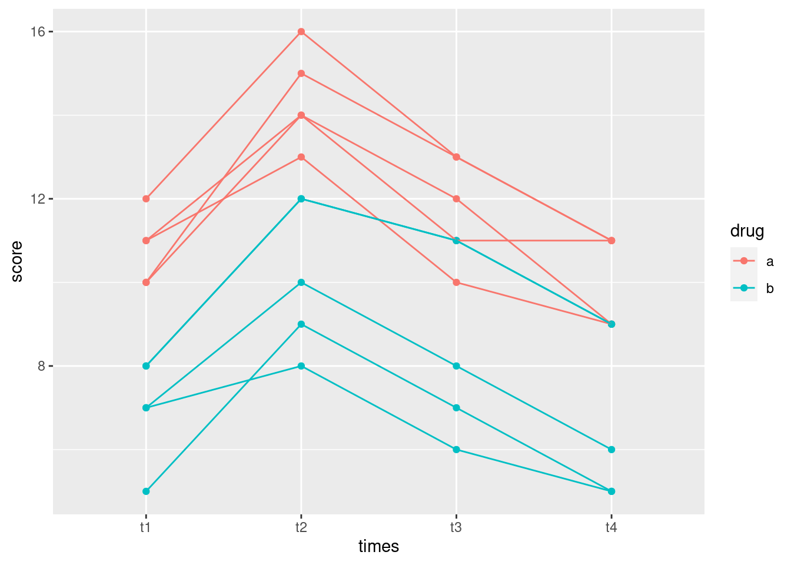

Chapter 21 Repeated measures
Packages for this chapter:
## Loading required package: carData## Loading required package: Matrix## ── Attaching packages ────────────────────────────────── tidyverse 1.2.1 ──## ✔ ggplot2 3.1.0 ✔ purrr 0.2.5
## ✔ tibble 1.4.2 ✔ dplyr 0.7.8
## ✔ tidyr 0.8.2 ✔ stringr 1.3.1
## ✔ readr 1.3.1 ✔ forcats 0.3.0## ── Conflicts ───────────────────────────────────── tidyverse_conflicts() ──
## ✖ tidyr::expand() masks Matrix::expand()
## ✖ dplyr::filter() masks stats::filter()
## ✖ dplyr::lag() masks stats::lag()
## ✖ dplyr::recode() masks car::recode()
## ✖ purrr::some() masks car::some()21.1 Effect of drug on rat weight
Box (1950) gives data on the weights of three groups of
rats. One group was given thyroxin in their drinking water, one group
thiouracil, and the third group was a control. (This description comes
from Christensen (2001).)
Weights are measured in
grams at weekly intervals (over a 4-week period, so that each rat is
measured 5 times). The data are in
link as a
.csv file.
- Read in the data and check that you have a column of
drugand five columns of rat weights at different times.
Solution
A .csv file, so read_csv. (I typed the data from
into a spreadsheet.)
## Parsed with column specification:
## cols(
## drug = col_character(),
## Time0 = col_double(),
## Time1 = col_double(),
## Time2 = col_double(),
## Time3 = col_double(),
## Time4 = col_double()
## )## # A tibble: 27 x 6
## drug Time0 Time1 Time2 Time3 Time4
## <chr> <dbl> <dbl> <dbl> <dbl> <dbl>
## 1 thyroxin 59 85 121 156 191
## 2 thyroxin 54 71 90 110 138
## 3 thyroxin 56 75 108 151 189
## 4 thyroxin 59 85 116 148 177
## 5 thyroxin 57 72 97 120 144
## 6 thyroxin 52 73 97 116 140
## 7 thyroxin 52 70 105 138 171
## 8 thiouracil 61 86 109 120 129
## 9 thiouracil 59 80 101 111 122
## 10 thiouracil 53 79 100 106 133
## # ... with 17 more rowsThere are 27 rats altogether, each measured five times (labelled time 0 through 4).
- Why would it be wrong to use something like
gatherto create one column of weights, and separate columns of drug and time, and then to run a two-way ANOVA? Explain briefly.
Solution
Such a solution would assume that we have measurements on different rats, one for each drug-time combination. But we have sets of five measurements all on the same rat: that is to say, we have repeated measures, and the proper analysis will take that into account.
- Create a suitable response variable and fit a suitable
lmas the first step of the repeated-measures analysis.
Solution
The response variable is the same idea as for any MANOVA: just glue the columns together:
response=with(weights,cbind(Time0,Time1,Time2,Time3,Time4))
weights.1=lm(response~drug,data=weights)Now, we don’t look at weights.1, but we do use
it as input to Manova in a moment.
- Load the package
carand run a suitableManova. To do this, you will need to set up the right thing foridataandidesign.
Solution
Something like this:
times=colnames(response)
times.df=data.frame(times)
weights.2=Manova(weights.1,idata=times.df,idesign=~times)The thought process is that the columns of the response
(Time.0 through Time.4) are all times. This is the
“within-subject design” part of it: within a rat, the different
response values are at different times. That’s the only part of it
that is within subjects. The different drugs are a
“between-subjects” factor: each rat only gets one of the
drugs. (Things would be a lot more complicated if each rat got a
different drug at a different time! But the rats each got one drug
once, at the beginning, and the issue was the effect of that
drug on all the growth that followed.)
- Take a look at the output from the MANOVA. Is there a significant interaction? What does its significance (or lack thereof) mean?
Solution
##
## Type II Repeated Measures MANOVA Tests: Pillai test statistic
## Df test stat approx F num Df den Df Pr(>F)
## (Intercept) 1 0.99257 3204.1 1 24 < 2.2e-16 ***
## drug 2 0.39192 7.7 2 24 0.0025559 **
## times 1 0.98265 297.4 4 21 < 2.2e-16 ***
## drug:times 2 0.87791 4.3 8 44 0.0006931 ***
## ---
## Signif. codes: 0 '***' 0.001 '**' 0.01 '*' 0.05 '.' 0.1 ' ' 1The interaction is definitely significant, with a P-value of 0.00069. This means that the effect of time on growth is different for the different drugs: that is, the effect of drug is over the whole time profile, not just something like “a rat on Thyroxin is on average 10 grams heavier than a control rat, over all times”.
Since the interaction is significant, that’s where we stop, as far as interpretation is concerned.
- We are going to draw an interaction plot in a moment. To
set that up, use
gatheras in the lecture notes to create one column of weights and and second column of times. (You don’t need to do theseparatething that I did in class, though if you want to try it, go ahead.)
Solution
## # A tibble: 135 x 3
## drug time weight
## <chr> <chr> <dbl>
## 1 thyroxin Time0 59
## 2 thyroxin Time0 54
## 3 thyroxin Time0 56
## 4 thyroxin Time0 59
## 5 thyroxin Time0 57
## 6 thyroxin Time0 52
## 7 thyroxin Time0 52
## 8 thiouracil Time0 61
## 9 thiouracil Time0 59
## 10 thiouracil Time0 53
## # ... with 125 more rowsMy data frame was called weights, so I was OK with having a
variable called weight. Watch out for that if you call the
data frame weight, though.
If you want to try the separate thing, that goes something
like this:
weights %>% gather(timex,weight,Time0:Time4) %>%
separate(timex,into=c("junk","time"),sep=4) -> weights2.long
weights2.long %>% sample_n(20)## # A tibble: 20 x 4
## drug junk time weight
## <chr> <chr> <chr> <dbl>
## 1 thyroxin Time 1 72
## 2 control Time 4 140
## 3 thiouracil Time 4 129
## 4 thiouracil Time 0 51
## 5 thyroxin Time 2 121
## 6 control Time 4 169
## 7 control Time 1 77
## 8 thiouracil Time 1 69
## 9 control Time 0 57
## 10 thiouracil Time 3 114
## 11 thiouracil Time 0 56
## 12 control Time 0 60
## 13 control Time 2 102
## 14 thyroxin Time 3 148
## 15 thyroxin Time 2 90
## 16 thyroxin Time 3 120
## 17 thiouracil Time 3 100
## 18 control Time 1 81
## 19 thiouracil Time 1 80
## 20 thyroxin Time 4 189Separate after the fourth character (sep=4), which will put
Time into junk and the actual time into
time. I could also have organized the data file so that the
word Time and the number were separated by some character,
like an underscore, and you could have separated at that.
Since the piece of the time we want is the number,
parse_number (from readr, part of the
tidyverse) should also work:
weights2.long = weights %>%
gather(timex,weight,Time0:Time4) %>%
mutate(time=parse_number(timex))
weights2.long %>% sample_n(20)## # A tibble: 20 x 4
## drug timex weight time
## <chr> <chr> <dbl> <dbl>
## 1 thyroxin Time3 138 3
## 2 thiouracil Time4 122 4
## 3 thyroxin Time4 177 4
## 4 thiouracil Time0 46 0
## 5 control Time3 139 3
## 6 thiouracil Time0 51 0
## 7 thyroxin Time3 151 3
## 8 thiouracil Time0 51 0
## 9 thyroxin Time2 121 2
## 10 control Time2 110 2
## 11 thyroxin Time4 138 4
## 12 control Time4 177 4
## 13 thyroxin Time1 71 1
## 14 thiouracil Time0 58 0
## 15 thyroxin Time3 156 3
## 16 control Time2 123 2
## 17 thyroxin Time3 120 3
## 18 control Time1 70 1
## 19 thyroxin Time2 97 2
## 20 thyroxin Time1 85 1I decided to show you a random collection of rows, so that you can see
that parse_number worked for various different times.
- Obtain an interaction plot. Putting
timeas thexwill put time along the horizontal axis, which is the way we’re used to seeing such things. Begin by calculating the meanweightfor eachtime-drugcombination.
Solution
group_by, summarize and ggplot, the
latter using the data frame that came out of the
summarize. The second factor drug goes as the
colour and group both, since time has
grabbed the x spot:
weights.long %>% group_by(time,drug) %>%
summarize(mean.weight=mean(weight)) %>%
ggplot(aes(x=time,y=mean.weight,colour=drug,group=drug))+
geom_point()+geom_line()
- How does this plot show why the interaction was significant? Explain briefly.
Solution
At the beginning, all the rats have the same average growth, but
from time 2 (or maybe even 1) or so, the rats on thiouracil
grew more slowly. The idea is not just that thiouracil has a
constant effect over all times, but that the pattern
of growth is different for the different drugs: whether or not
thiouracil inhibits growth, and, if so, by how much, depends on
what time point you are looking at.
Rats on thyroxin or the control drug grew at pretty much the same
rate over all times, so I wouldn’t concern myself with any
differences there.
What I thought would be interesting is to plot the growth curves
for all the rats individually, colour-coded by which drug
the rat was on. In other words, a “spaghetti plot”.
This goes rather nicely with ggplot2.
Unfortunately, there’s a bit of data awkwardness, because we need
to know which rat is which when we plot them. To do that, we need
to go all the way back to weights and introduce a
subject-number variable. This suggests a chain of
things. There are 27 rats altogether. First we take the original
data frame weights with each row being one rat, and we
add a variable subject which is 1 through 27. Then we
gather together the columns Time0 through
Time4 that are different times but all
weights, like we did before. Optionally, we can also
separate Time.x into the Time part and
the x part (x being 0, 1, 2, 3, 4), but I won’t
do that here. Then we save the result into a new data frame
wt, and take a look at the first few lines:
## # A tibble: 135 x 4
## drug subject time weight
## <chr> <int> <chr> <dbl>
## 1 thyroxin 1 Time0 59
## 2 thyroxin 2 Time0 54
## 3 thyroxin 3 Time0 56
## 4 thyroxin 4 Time0 59
## 5 thyroxin 5 Time0 57
## 6 thyroxin 6 Time0 52
## 7 thyroxin 7 Time0 52
## 8 thiouracil 8 Time0 61
## 9 thiouracil 9 Time0 59
## 10 thiouracil 10 Time0 53
## # ... with 125 more rowsEach rat is identified by subject, which repeats 5 times,
once for each value of time.
After going through that, the logic of the actual plotting part is
pretty straightforward. In the data frame wt, we plot
time (\(x\)) against weight (\(y\)), grouping the points
according to subject and colouring them according to
drug.

This is often called, rather aptly, a “spaghetti plot”.
I like this plot because, unlike the interaction plot, which shows only means, this gives a sense of variability as well. The blue and red lines (thyroxin and control) are all intermingled and they go straight up. So there is nothing to choose between these. The green lines, though, start off mixed up with the red and blue ones but finish up at the bottom: the pattern of growth of the thiouracil rats is different from the others, which is why we had a significant interaction between drug and time.
drug is categorical, so ggplot
uses a set of distinguishable colours to mark the levels. If our
colour had been a numerical variable, ggplot would have used
a range of colours like light blue to dark blue, with lighter being
higher, for example.
What, you want to see that? All right. This one is kind of silly, but you see the point:

The line segments get lighter as you go up the page.
Since we went to the trouble of making the “long” data frame
wt, we can also run a repeated measures analysis using the
mixed-model idea (described elsewhere in this assignment):
## Single term deletions
##
## Model:
## weight ~ drug * time + (1 | subject)
## Df AIC LRT Pr(Chi)
## <none> 990.5
## drug:time 8 1067.8 93.27 < 2.2e-16 ***
## ---
## Signif. codes: 0 '***' 0.001 '**' 0.01 '*' 0.05 '.' 0.1 ' ' 1The drug-by-time interaction is even more strongly significant than in
the profile analysis. (The output from drop1 reminds us that
the only thing we should be thinking about now is that interaction.)
21.3 Children’s stress levels and airports
If you did STAC32, you might remember this question, which we can now do properly. Some of this question is a repeat from there.
The data in link
are based on a 1998 study of stress levels in children as a result of
the building of a new airport in Munich, Germany. A total of 200
children had their epinephrine levels (a stress indicator) measured at
each of four different times: before the airport was built, and 6, 18
and 36 months after it was built. The four measurements are labelled
epi_1 through epi_4. Out of the children, 100
were living near the new airport (location 1 in the data set), and
could be expected to suffer stress because of the new airport. The
other 100 children lived in the same city, but outside the noise
impact zone. These children thus serve as a control group. The
children are identified with numbers 1 through 200.
- If we were testing for the effect of time, explain briefly what it is about the structure of the data that would make an analysis of variance inappropriate.
Solution
It is the fact that each child was measured four times, rather than each measurement being on a different child (with thus \(4\times 200=800\) observations altogether). It’s the same distinction as between matched pairs and a two-sample \(t\) test.
- Read the data into R and demonstrate that you have the right number of observations and variables.
Solution
The usual, data values separated by one space:
## Parsed with column specification:
## cols(
## epi_1 = col_double(),
## epi_2 = col_double(),
## epi_3 = col_double(),
## epi_4 = col_double(),
## location = col_double(),
## child = col_double()
## )## # A tibble: 200 x 6
## epi_1 epi_2 epi_3 epi_4 location child
## <dbl> <dbl> <dbl> <dbl> <dbl> <dbl>
## 1 89.6 253. 214. 209. 1 1
## 2 -55.5 -1.45 26.0 259. 1 2
## 3 201. 280. 265. 174. 1 3
## 4 448. 349. 386. 225. 1 4
## 5 -4.60 315. 331. 333. 1 5
## 6 231. 237. 488. 319. 1 6
## 7 227. 469. 382. 359. 1 7
## 8 336. 280. 362. 472. 1 8
## 9 16.8 190. 90.9 145. 1 9
## 10 54.5 359. 454. 199. 1 10
## # ... with 190 more rowsThere are 200 rows (children), with four epi measurements, a
location and a child identifier, so that looks good.
(I am mildly concerned about the negative epi measurements,
but I don’t know what the scale is, so presumably they are all
right. Possibly epinephrine is measured on a log scale, so that a
negative value here is less than 1 on the original scale that we don’t
see.)
- Create and save a “long” data frame with all the epinephrine values gathered together into one column.
Solution
## # A tibble: 800 x 4
## location child when epinephrine
## <dbl> <dbl> <chr> <dbl>
## 1 1 1 epi_1 89.6
## 2 1 2 epi_1 -55.5
## 3 1 3 epi_1 201.
## 4 1 4 epi_1 448.
## 5 1 5 epi_1 -4.60
## 6 1 6 epi_1 231.
## 7 1 7 epi_1 227.
## 8 1 8 epi_1 336.
## 9 1 9 epi_1 16.8
## 10 1 10 epi_1 54.5
## # ... with 790 more rowsSuccess. I’m saving the name time for later, so I’ve called
the time points when for now. There were 4 measurements on
each of 200 children, so the long data frame should (and does) have
\(200\times 4 = 800\) rows.
- Make a “spaghetti plot” of these data: that is, a plot of epinephrine levels against time, with the locations identified by colour, and the points for the same child joined by lines. To do this: (i) from the long data frame, create a new column containing only the numeric values of time (1 through 4), (ii) plot epinephrine level against time with the points grouped by child and coloured by location (which you may have to turn from a number into a factor.)
Solution
I hope you are thinking “pipeline”:
airport.long %>% mutate(time=parse_number(when)) %>%
ggplot(aes(x=time,y=epinephrine,colour=factor(location),group=child))+
geom_point()+geom_line()This is different from the plot we had in C32, where I had you use a different colour for each child, and we ended up with a huge legend of all the children (which we then removed).
If you forget to turn location into a factor, ggplot
will assume that you want location to be on a continuous
scale, and you’ll get two shades of blue.
Another problem with this plot is that there are so many children, you
can’t see the ones underneath because the ones on top are overwriting
them. The solution to that is to make the lines (partly) transparent,
which is controlled by a parameter alpha:
This is different from the 0.05 alpha.
airport.long %>% mutate(time=parse_number(when)) %>%
ggplot(aes(x=time,y=epinephrine,colour=factor(location),group=child))+
geom_point()+geom_line(alpha=0.2)
It seems to make the lines skinnier, so they look more like threads. Even given the lesser thickness, they seem to be a little bit see-through as well. You can experiment with adding transparency to the points in addition.
- What do you see on your spaghetti plot? We are looking ahead to possible effects of time, location and their interaction.
Solution
This is not clear, so it’s very much your call. I see the red spaghetti strands as going up further (especially) and maybe down further than the blue ones. The epinephrine levels of the children near the new airport are definitely more spread out, and maybe have a higher mean, than those of the control group of children not near the airport. The red spaghetti strands show something of an increase over time, at least up to time 3, after which they seem to drop again. The blue strands, however, don’t show any kind of trend over time. Since the time trend is different for the two locations, I would expect to see a significant interaction.
- The spaghetti plot was hard to interpret because there are so many children. Calculate the mean epinephrine levels for each location-time combination, and make an interaction plot with time on the \(x\)-axis and location as the second factor.
Solution
We’ve done this before:
airport.long %>% mutate(time=parse_number(when)) %>%
mutate(floc=factor(location)) %>%
group_by(floc,time) %>%
summarize(mean.epi=mean(epinephrine)) %>%
ggplot(aes(x=time,y=mean.epi,group=floc,colour=floc))+
geom_point()+geom_line()
I wanted the actual numerical times, so I made them again. Also, it
seemed to be easier to create a factor version of the numeric location
up front, and then use it several times later. I’m actually not sure
that you need it here, since group_by works with the
distinct values of a variable, whatever they are, and group
in a boxplot may or may not insist on something other than a number. I
should try it:
airport.long %>% mutate(time=parse_number(when)) %>%
group_by(location,time) %>%
summarize(mean.epi=mean(epinephrine)) %>%
ggplot(aes(x=time,y=mean.epi,group=location,colour=location))+
geom_point()+geom_line()
It seems that colour requires a non-number:
airport.long %>% mutate(time=parse_number(when)) %>%
group_by(location,time) %>%
summarize(mean.epi=mean(epinephrine)) %>%
ggplot(aes(x=time,y=mean.epi,group=location,colour=factor(location)))+
geom_point()+geom_line()
With a long pipeline like this, none of us get it right the first time (I certainly didn’t), so be prepared to debug it one line at a time. The way I like to do this is to take the pipe symbol and move it down to the next line (moving the cursor to just before it and hitting Enter). This ends the pipe at the end of this line and displays what it produces so far. When you are happy with that, go to the start of the next line (that currently has a pipe symbol by itself) and hit Backspace to move the pipe symbol back where it was. Then go to the end of the next line (where the next pipe symbol is), move that to a line by itself, and so on. Keep going until each line produces what you want, and when you are finished, the whole pipeline will do what you want.
- What do you conclude from your interaction plot? Is your conclusion clearer than from the spaghetti plot?
Solution
The two “traces” are not parallel, so I would expect to see an interaction between location and time. The big difference seems to be between times 1 and 2; the traces are the same at time 1, and more or less parallel after time 2. Between times 1 and 2, the mean epinephrine level of the children near the new airport increases sharply, whereas for the children in the control group it increases much less. This, to my mind, is very much easier to interpret than the spaghetti plot, even the second version with the thinner strands, because there is a lot of variability there that obscures the overall pattern. The interaction plot is plain as day, but it might be an oversimplification because it doesn’t show variability.
- Run a repeated-measures analysis of variance and display the
results. Go back to your original data frame, the one you read in
from the file, for this. You’ll need to make sure your numeric
locationgets treated as afactor.
Solution
The usual process. I’ll try the other way I used of making the
response:
airport %>% select(epi_1:epi_4) %>%
as.matrix() -> response
airport.1=lm(response~factor(location),data=airport)
times=colnames(response)
times.df=data.frame(times)
airport.2=Manova(airport.1,idata=times.df,idesign=~times)
airport.2##
## Type II Repeated Measures MANOVA Tests: Pillai test statistic
## Df test stat approx F num Df den Df Pr(>F)
## (Intercept) 1 0.92013 2281.00 1 198 < 2.2e-16 ***
## factor(location) 1 0.13120 29.90 1 198 1.361e-07 ***
## times 1 0.32741 31.80 3 196 < 2.2e-16 ***
## factor(location):times 1 0.23737 20.34 3 196 1.626e-11 ***
## ---
## Signif. codes: 0 '***' 0.001 '**' 0.01 '*' 0.05 '.' 0.1 ' ' 1- What do you conclude from the MANOVA? Is that consistent with your graphs? Explain briefly.
Solution
We start and end with the significant interaction: there is an
effect of location, but the nature of that effect depends on
time. This is the same as we saw in the interaction plot:
from time 2 on, the mean epinephrine levels for the children near
the new airport were clearly higher.
If you stare at the spaghetti plot, you might come to
the same conclusion. Or you might not! I suppose those red
dots at time 2 are mostly at the top, and generally so
afterwards, whereas at time 1 they are all mixed up with the
blue ones.
Interactions of this sort in this kind of analysis are very
common. There is an “intervention” or “treatment”, and the
time points are chosen so that the first one is before the
treatment happens, and the other time points are after. Then,
the results are very similar for the first time point, and
very different after that, rather than being (say) always
higher for the treatment group by about the same amount for
all times (in which case there would be no interaction).
So, you have some choices in practice as to how you might
go. You might do the MANOVA, get a significant interaction,
and draw an interaction plot to see why. You might stop there,
or you might do something like what we did in class: having
seen that the first time point is different from the others
for reasons that you can explain, do the analysis again, but
omitting the first time point. For the MANOVA, that means
tweaking your definition of your response to omit the
first time point. The rest of it stays the same, though you
might want to change your model numbers rather than re-using
the old ones as I did:
airport %>% select(epi_2:epi_4) %>%
as.matrix() -> response
airport.1=lm(response~factor(location),data=airport)
times=colnames(response)
times.df=data.frame(times)
airport.2=Manova(airport.1,idata=times.df,idesign=~times)
airport.2##
## Type II Repeated Measures MANOVA Tests: Pillai test statistic
## Df test stat approx F num Df den Df Pr(>F)
## (Intercept) 1 0.91853 2232.38 1 198 < 2.2e-16 ***
## factor(location) 1 0.19515 48.01 1 198 5.822e-11 ***
## times 1 0.01236 1.23 2 197 0.293852
## factor(location):times 1 0.05086 5.28 2 197 0.005851 **
## ---
## Signif. codes: 0 '***' 0.001 '**' 0.01 '*' 0.05 '.' 0.1 ' ' 1The interaction is still significant, so there is still not a consistent effect of being near the new airport on epinephrine levels: that is to say, the effect of the new airport still varies over time. That might be because (looking at the interaction plot) for the children near the new airport, the mean epinephrine level went up again between times 2 and 3, whereas for the control children it (for some reason) went dramatically down over the same time period.
We have lots of data here (200 children), so the significant interaction effect also might not be very big.
Experimental designs like this are kind of awkward, because you expect there to be some kind of pattern over time for the treatment group, that will vary over time, whereas for the control group, you expect there to be no pattern over time. So a significant difference shows up as an interaction, which is messier to interpret than you would like.
Extra: the other way to analyze repeated measures data (that we, well, you, do not look
at in this course)
This is something I want to understand, so I will share my findings with you. You can read them or not, as you choose. is to treat them as “mixed models”, which
requires a different kind of analysis using the lme4
package. I always forget how these go, and I have to look them up when
I need them, but the idea is this: the treatments you observe, and the
time points at which you observe them, are
typically the only ones you care about (a so-called “fixed effect”),
but the individuals (children, here)
which you happen to observe are
something like a random sample of all the children you might have
observed (a so-called “random effect”). Models with random effects
in them are called “mixed models” (or, I suppose, models with both
fixed and random effects). This matters because you have repeated
observations on the same child. Some people like to think of
this in terms of “sources of variability”: the epinephrine levels
vary because of the location and time at which they were observed, but
also because of the particular child they happen to have been observed
for: each child has a “random effect” that they carry with them
through all the time points at which they are observed.
Let’s see if we can make it fly for this example. We need the data in
“long” format, the way we arranged it for graphing: the data frame
airport.long. I’d like to convert things to factors first:
airport.long %>% mutate(fchild=factor(child),
flocation=factor(location)
) -> fairport
airport.3=lmer(epinephrine~flocation*when+(1|fchild), data=fairport)
anova(airport.3)## Analysis of Variance Table
## Df Sum Sq Mean Sq F value
## flocation 1 168177 168177 29.900
## when 3 475671 158557 28.190
## flocation:when 3 366641 122214 21.728## Single term deletions
##
## Model:
## epinephrine ~ flocation * when + (1 | fchild)
## Df AIC LRT Pr(Chi)
## <none> 9521.2
## flocation:when 3 9577.6 62.475 1.739e-13 ***
## ---
## Signif. codes: 0 '***' 0.001 '**' 0.01 '*' 0.05 '.' 0.1 ' ' 1The anova doesn’t actually give us any tests, but what you
see in the ANOVA table are the fixed effects. These are testable. The
easiest way to see what you can get rid of is drop1; the
chi-squared test appears to be the right one (more on that
below). This says that the interaction is strongly significant, and we
should not consider removing it, the same conclusion as our
“profile analysis” before.
The other choice for
testing is to fit a model without what you
are testing and use anova to compare the two models:
## refitting model(s) with ML (instead of REML)## Data: fairport
## Models:
## airport.4: epinephrine ~ flocation + when + (1 | fchild)
## airport.3: epinephrine ~ flocation * when + (1 | fchild)
## Df AIC BIC logLik deviance Chisq Chi Df Pr(>Chisq)
## airport.4 7 9577.6 9610.4 -4781.8 9563.6
## airport.3 10 9521.2 9568.0 -4750.6 9501.2 62.475 3 1.739e-13 ***
## ---
## Signif. codes: 0 '***' 0.001 '**' 0.01 '*' 0.05 '.' 0.1 ' ' 1There are technical considerations involved in comparing the fit of
two models (which is the reason for the
“refitting models with…”): there is one method for estimating and a different
method for testing. The test is based on “likelihood ratio”, which
means that the right test for the drop1 above is
Chisq.
If you omit the test in drop1, it just gives
you AIC values, which you can use for an informal assessment. In this
case, <none> has a much smaller AIC than the interaction
(smaller by over 50), so there’s no way we should entertain taking out
the interaction. However, if it had not been significant, we would
just take it out by fitting a model like airport4: there is
no distinction here between “within-subject” and
“between-subject”
factors that prevented us from taking the interaction out in profile
analysis.
As ever when an interaction is significant, we might think about
simple effects: that is, look at the two locations separately. That
makes sense here because of the kind of experimental design it is: we
expect a different kind of relationship with time for the
“treatment” children (the ones living near the new airport) as
compared to the control children, the ones who live farther away. That
approach would work with either the profile-analysis way using
Manova or the mixed-modelling way using lmer. In
either case, we’d expect to see a time effect at location 1 but not at
location 2. (Having separated out locations, only the time effect
would be left for testing.) I guess I have to show you that, but I
have to get ready for class first.
Later
The nice thing about Wednesday evenings is that I am so tired from class that I have energy for almost nothing except playing with these things. So let’s have a crack at it.
Let’s start with location 1, at which we expect there to be something happening. This is really a simple effect of time at location 1, but in repeated measures guise. The awkwardness is that the profile analysis needs the wide-format data, while the mixed-model analysis needs long format, so we’ll have to repeat our process, once for each format of data set:
loc1 = airport %>% filter(location==1)
response = loc1 %>% select(epi_1:epi_4) %>% as.matrix()
loc1.1=lm(response~1,data=loc1)
times=colnames(response)
times.df=data.frame(times)
loc1.2=Manova(loc1.1,idata=times.df,idesign=~times)## Note: model has only an intercept; equivalent type-III tests substituted.##
## Type III Repeated Measures MANOVA Tests: Pillai test statistic
## Df test stat approx F num Df den Df Pr(>F)
## (Intercept) 1 0.89729 864.86 1 99 < 2.2e-16 ***
## times 1 0.45423 26.91 3 97 9.496e-13 ***
## ---
## Signif. codes: 0 '***' 0.001 '**' 0.01 '*' 0.05 '.' 0.1 ' ' 1This is one of those times where a pipe doesn’t quite do it. We need
to grab the data for location 1, but then we need to do two things
with it: one, create a response variable, and two, feed the response
variable and the location 1 data into lm. Pipes are
for linear sequences of things to do, and this one diverges. So, save
what you need to save, and then do it without a pipe.
This is one of those explanatory-variable-less repeated measures where you only have things varying over time. Here, the treatment was location, and we’re only looking at one of those locations. We still have a within-subject design (the four times), but there is no between-subject design left.
The conclusion is that there is very strong evidence of a time effect for location 1, as we would have guessed.
Now, let’s see whether the mixed-model analysis comes to the same
conclusion. This time, we have to start from the long data set
(the one I’m using is the one called fairport with things as
factors) and pull out the rows for location 1. The only remaining
fixed effect is time:
fairport %>% filter(location==1) %>%
lmer(epinephrine~when+(1|fchild),data=.) %>%
drop1(test="Chisq")## Single term deletions
##
## Model:
## epinephrine ~ when + (1 | fchild)
## Df AIC LRT Pr(Chi)
## <none> 4964.1
## when 3 5032.1 74.048 5.796e-16 ***
## ---
## Signif. codes: 0 '***' 0.001 '**' 0.01 '*' 0.05 '.' 0.1 ' ' 1The effect of time is, once again, substantial. The P-value is not the same, because the test is not the same, but it is very similar and points to exactly the same conclusion.
I should perhaps point out that you don’t have to do these models in a pipe. I just did because it was easier for me. But there’s nothing wrong with doing it like this:
tmp=fairport %>% filter(location==1)
tmp.1=lmer(epinephrine~when+(1|child),data=tmp)
drop1(tmp.1,test="Chisq")## Single term deletions
##
## Model:
## epinephrine ~ when + (1 | child)
## Df AIC LRT Pr(Chi)
## <none> 4964.1
## when 3 5032.1 74.048 5.796e-16 ***
## ---
## Signif. codes: 0 '***' 0.001 '**' 0.01 '*' 0.05 '.' 0.1 ' ' 1and it gives exactly the same result.
This last model (in either of its versions) is a so-called random
intercepts model. What it says is that epinephrine level for a child
depends on time, but the effect of being one child rather than another
is to shunt the mean epinephrine level up or down by a fixed amount
for all times. It seems to me that this is a very reasonable way to
model the child-to-child variation in this case, but in other cases,
things might be different. lmer allows more sophisticated
things, like for example the random child effect depending linearly on
time. To do that, you’d rewrite the above like this:
fairport %>% filter(location==1) %>%
lmer(epinephrine~when+(1+when|fchild),data=.) %>%
drop1(test="Chisq")The change is on the lmer line: the bit in brackets has a
linear model in when for each child. I didn’t run that, so
I’m not certain it works,
I’m suspicious about when needing to be the numerical time inside. Not sure. but that’s the idea.
All right, let’s get on to location 2. This was the control location, so we expect to see no dependence of epinephrine level on time, either in the profile analysis or in the mixed-model analysis. There is a large amount of copying and pasting coming up:
airport %>% filter(location==2) -> loc2
loc2 %>% select(epi_1:epi_4) %>% as.matrix() -> response
loc2.1=lm(response~1,data=loc1)
times=colnames(response)
times.df=data.frame(times)
loc2.2=Manova(loc2.1,idata=times.df,idesign=~times)## Note: model has only an intercept; equivalent type-III tests substituted.##
## Type III Repeated Measures MANOVA Tests: Pillai test statistic
## Df test stat approx F num Df den Df Pr(>F)
## (Intercept) 1 0.96147 2470.17 1 99 < 2.2e-16 ***
## times 1 0.30236 14.01 3 97 1.161e-07 ***
## ---
## Signif. codes: 0 '***' 0.001 '**' 0.01 '*' 0.05 '.' 0.1 ' ' 1I think I changed everything I needed to.
There actually is still an effect of time. What kind of effect?
We can look at that by finding epinephrine means at each time. That
would be easier if we had long format, but I think we can still do
it. The magic word is summarize_at (well, the magic two
words):
## # A tibble: 1 x 4
## epi_1 epi_2 epi_3 epi_4
## <dbl> <dbl> <dbl> <dbl>
## 1 249. 279. 251. 247.The message here is that the mean epinephrine levels at time 2 were higher than the others, so that’s what seems to be driving the time effect. And remember, these were the control children, so they had no new airport nearby.
I want to try this:
## # A tibble: 2 x 2
## location data
## <dbl> <list>
## 1 1 <tibble [100 × 5]>
## 2 2 <tibble [100 × 5]>This is like the idea in the Spilich problem: I want to write a
function that calculates the means of the epi_1 through
epi_4 columns of a data frame like airport, and
then apply it to each of those “nested” data frames.
epi.means=function(x) {
x %>% summarize_at(vars(starts_with("epi")),funs(mean))
}
epi.means(airport)## # A tibble: 1 x 4
## epi_1 epi_2 epi_3 epi_4
## <dbl> <dbl> <dbl> <dbl>
## 1 248. 309. 304. 298.OK, and then:
## # A tibble: 2 x 6
## location data epi_1 epi_2 epi_3 epi_4
## <dbl> <list> <dbl> <dbl> <dbl> <dbl>
## 1 1 <tibble [100 × 5]> 247. 340. 356. 349.
## 2 2 <tibble [100 × 5]> 249. 279. 251. 247.Ooh, nice. There are the means for the four time points at both of the two locations. At location 1, epinephrine starts out low, jumps high after the airport is built, and stays there, while at location 2, the mean is mysteriously higher at time 2 and then epinephrine levels go back down again.
Enough of that. Back to the mixed model analysis, with more copying and pasting. Here is the “simple time effect” at location 2:
fairport %>% filter(location==2) %>%
lmer(epinephrine~when+(1|fchild),data=.) %>%
drop1(test="Chisq")## Single term deletions
##
## Model:
## epinephrine ~ when + (1 | fchild)
## Df AIC LRT Pr(Chi)
## <none> 4336.8
## when 3 4363.7 32.889 3.399e-07 ***
## ---
## Signif. codes: 0 '***' 0.001 '**' 0.01 '*' 0.05 '.' 0.1 ' ' 1This also finds a time effect at location 2, with a very similar P-value.
So which method is preferred? They are, I think, two different ways of
approaching the same problem, and so there is no good reason to prefer
one way over the other. The profile-analysis way is easier to follow
if you are coming from a MANOVA direction: set it up the same way as
you would a MANOVA, with your repeated measures as your multivariate
response, and distinguish between the within-subject design (times,
for us) and the between-subject design (treatments, stuff like
that). As for mixed models: when you get your head around that crazy
way of specifying the random effects, which are typically “subjects”
in this kind of analysis, the actual model statement is brief:
response depends on fixed effects plus random effects with the
brackets and vertical bar. I always find the lmer models look
very simple once you have figured them out (like ggplot in
that regard). I also like the fact that lmer uses “tidy data”,
so that you can make graphs and do this flavour of analysis
with the same data frame. Having gotten my head around getting my data
tidy, it seems odd to me that profile analysis requires the data to be
untidy, although it does so for a good reason: if you were genuinely
doing a MANOVA, you would want your multiple response
variables each in their own column. Doing repeated measures this way
is thinking of your responses at different times like different
variables.
The approach I’ve taken in this course is for historical reasons. That is to say, my history, not because the historical perspective is necessarily the best one. It began with doing repeated measures in SAS (this was like nine years ago), and the only way I could get my head around that was the profile-analysis way. I’m not even sure there was software for doing mixed models in those days, certainly not in SAS. Besides, random effects scared me back then. Anyway, when I moved things over to R (this must have been about six years ago), I realized I was using basically the same idea in R: make it into a MANOVA and tweak things as needed. So I developed things by showing you MANOVA first as ANOVA when you have lots of \(y\)-variables instead of just one, and then using it for repeated measures by thinking of the repeated measures as “different-but-related” \(y\)-variables. To my mind, this is a reasonable way of doing it in a course like this: you get to see MANOVA, which is worth knowing about anyway, and then you get to apply it to a very common situation.
Mixed models are actually quite recent, as a way of doing this kind of
modelling. Back when I was learning this stuff, you learned to
distinguish between “fixed effects”, whose levels were the only ones
you cared about (like the two locations here), and “random effects”,
where the ones you observed were only a sample of the ones you might
have seen (like “children” or in general “subjects”). Then you
would test the fixed effects by hypothesizing that their mean effect
was zero and seeing whether you could reject that (in the same way
that you do in regression or regular ANOVA: in the latter case, you
test that the effects of all the different groups are zero, which
comes down to saying that all the groups have the same mean). The way
you handled random effects was to estimate their variance, and
then you would test whether a random effect exists or not by testing
whether the variance of that random effect is zero (does not exist) or
is greater than zero. Zero is the smallest a variance (or SD) can be,
which means that testing for it has always been kind of flakey and the
standard theory doesn’t work for it (the technical term is
“on the boundary of the parameter space”, and the theory applies when the
null-hypothesis value is strictly inside the set of possible
values the parameter can take). Back when we did this stuff by
hand,
I understand psychology students still do this kind of stuff by hand. we had to figure out whether we were testing
a fixed or a random effect, and there were rules, involving things
called “expected mean squares”, that told you how to get the tests
right. Anyway, that is all considered rather old-fashioned now, and
mixed models are where it is at. In these, you typically only
test the fixed effects, while estimating the size of the random
effects, taking it for granted that they exist. This is an active area
of research; the things that lmer fits are called
“linear mixed models”, and there are also now
“generalized linear mixed models”, things like logistic regression with random effects.
We haven’t had to worry about this up to now because in most of the experimental designs we have used, each subject only contributes one measurement. In that case, you cannot separate out a subject-specific “random effect” from random error, and so we lump it all into random error. The one experimental design where a subject gives us more than one measurement is matched pairs, and the way we have handled that so far is to turn the two measurements into one by taking the difference between them; even in that case, each subject contributes only one difference to the analysis. Repeated measures, though, is genuinely different: you can’t wish away multiple measurements on the same subject by taking differences any more, so you have to face up to the issue at last. Either we think of it as several different measurements that might be correlated (the profile-analysis MANOVA way), or we face up to the idea that different subjects bring their own random effect to the table that shows up in every measurement that the subject provides (mixed models).
I did analysis of covariance as a separate mini-section, thinking of it as a regression, but if the numerical covariate is the same thing as the response but measured at a different time (eg., before rather than after), that would also respond to a repeated-measures approach, or to the taking of differences as matched pairs does. There is almost always more than one way to look at these things.
This one is also stolen from STAC32. Athletes are concerned with measuring their body fat percentage. Two different methods are available: one using ultrasound, and the other using X-ray technology. We are interested in whether there is a difference in the mean body fat percentage as measured by these two methods, and if so, how big that difference is. Data on 16 athletes are at link.
- Read in the data and check that you have a sensible number of rows and columns.
Solution
This kind of thing:
## Parsed with column specification:
## cols(
## athlete = col_double(),
## xray = col_double(),
## ultrasound = col_double()
## )## # A tibble: 16 x 3
## athlete xray ultrasound
## <dbl> <dbl> <dbl>
## 1 1 5 4.75
## 2 2 7 3.75
## 3 3 9.25 9
## 4 4 12 11.8
## 5 5 17.2 17
## 6 6 29.5 27.5
## 7 7 5.5 6.5
## 8 8 6 6.75
## 9 9 8 8.75
## 10 10 8.5 9.5
## 11 11 9.25 9.5
## 12 12 11 12
## 13 13 12 12.2
## 14 14 14 15.5
## 15 15 17 18
## 16 16 18 18.216 rows (athletes) and 3 columns, one for each measurement method and one labelling the athletes. All good.
- Carry out a suitable (matched-pairs) \(t\)-test to determine whether the means are the same or different.
Solution
Feed the two columns into t.test along with
paired=T. Remember that this is (in effect) a one-sample
\(t\)-test, so that you can’t use a data=. You therefore have
to wrap everything in a with:
##
## Paired t-test
##
## data: xray and ultrasound
## t = -0.30801, df = 15, p-value = 0.7623
## alternative hypothesis: true difference in means is not equal to 0
## 95 percent confidence interval:
## -0.7425068 0.5550068
## sample estimates:
## mean of the differences
## -0.09375The test we want is two-sided, so we didn’t have to take any special steps to get that.
- What do you conclude from the test?
Solution
The P-value of 0.7623 is not at all small, so there is no way we can reject the null hypothesis. My hat stays on my head. There is no evidence of a difference in means; we can act as if the two methods produce the same mean body fat percentage. That is to say, on this evidence we can use either method, whichever one is cheaper or more convenient.
- Run a repeated-measures analysis of variance, treating the two
methods of measuring body fat as the repeated measures (ie., playing
the role of “time” that you have seen in most of the other repeated
measures analyses). There is no “treatment” here, so there is
nothing to go on the right side of the squiggle. Insert a
1there to mean “just an intercept”. Display the results.
Solution
Construct the response variable, run lm, construct the
within-subjects part of the design, run Manova:
bodyfat %>% select(xray:ultrasound) %>%
as.matrix() -> response
bodyfat.1=lm(response~1)
methods=colnames(response)
methods.df=data.frame(methods)
bodyfat.2=Manova(bodyfat.1,idata=methods.df,idesign=~methods)## Note: model has only an intercept; equivalent type-III tests substituted.##
## Type III Repeated Measures MANOVA Tests: Pillai test statistic
## Df test stat approx F num Df den Df Pr(>F)
## (Intercept) 1 0.79734 59.016 1 15 1.413e-06 ***
## methods 1 0.00628 0.095 1 15 0.7623
## ---
## Signif. codes: 0 '***' 0.001 '**' 0.01 '*' 0.05 '.' 0.1 ' ' 1- Compare your repeated-measures analysis to your matched-pairs one. Do you draw the same conclusions?
Solution
The P-value for methods, which is testing the same thing
as the matched pairs, is 0.7623, which is actually
identical to the matched pairs \(t\)-test, and so the
conclusion is identical also. That is, there is no difference
between the two methods for measuring body fat.
This goes to show that repeated measures gives the same answer as
a matched-pairs \(t\)-test in the situation where they both
apply. But repeated measures is, as we have seen, a lot more general.
Since this really is repeated measures, we ought to be able to use
a mixed model here too. We need “long” or “tidy” format, which
we don’t have yet. One pipe to save them all, to paraphrase Lord
of the Rings
The movies of Lord of the Rings were filmed in New Zealand, which is also the country in which R was first designed. — put all the fat measurements in one column with a
label saying which method they were obtained with; create
a column which is the athlete number as a factor; fit the linear
mixed model; see what we can drop from it:
## # A tibble: 16 x 3
## athlete xray ultrasound
## <dbl> <dbl> <dbl>
## 1 1 5 4.75
## 2 2 7 3.75
## 3 3 9.25 9
## 4 4 12 11.8
## 5 5 17.2 17
## 6 6 29.5 27.5
## 7 7 5.5 6.5
## 8 8 6 6.75
## 9 9 8 8.75
## 10 10 8.5 9.5
## 11 11 9.25 9.5
## 12 12 11 12
## 13 13 12 12.2
## 14 14 14 15.5
## 15 15 17 18
## 16 16 18 18.2bodyfat %>% gather(method,fat,xray:ultrasound) %>%
mutate(fathlete=factor(athlete)) %>%
lmer(fat~method+(1|fathlete),data=.) %>%
drop1(test="Chisq")## Single term deletions
##
## Model:
## fat ~ method + (1 | fathlete)
## Df AIC LRT Pr(Chi)
## <none> 161.34
## method 1 159.44 0.10088 0.7508Once again, there is no difference between methods, and though the P-value is different from the matched pairs or profile analysis, it is very close to those.
If you’re not clear about the tidy data frame used for input to
lmer, pull the top two lines off the chain and see what they produce:
## # A tibble: 32 x 4
## athlete method fat fathlete
## <dbl> <chr> <dbl> <fct>
## 1 1 xray 5 1
## 2 2 xray 7 2
## 3 3 xray 9.25 3
## 4 4 xray 12 4
## 5 5 xray 17.2 5
## 6 6 xray 29.5 6
## 7 7 xray 5.5 7
## 8 8 xray 6 8
## 9 9 xray 8 9
## 10 10 xray 8.5 10
## # ... with 22 more rowsEach athlete now appears twice: once with their fat measured
by xray, and again with it measured by
ultrasound. The column fathlete is a factor.
The mixed model took me two goes to get right: I forgot that I needed the
data=. in lmer, because it works like lm
with the model formula first, not the input data. If the chain is
going too fast for you, create the tidy data frame and save it, then
use the saved data frame as input to lmer.
21.4 Investigating motor activity in rats
A researcher named King was investigating the effect of the drug midazolam on motor activity in rats. Typically, the first time the drug is injected, a rat’s motor activity decreases substantially, but rats typically develop a “tolerance”, so that further injections of the drug have less impact on the rat’s motor activity.
The data shown in
link were all taken
in one day, called the “experiment day” below. 24 different rats
were used. Each rat, on the experiment day, was injected with a fixed
amount of midazolam, and at each of six five-minute intervals after
being injected, the rat’s motor activity was measured (these are
labelled i1 through i6 in the data). The rats
differed in how they had been treated before the experiment day. The
control group of rats had previously been injected repeatedly with a
saline solution (no active ingredient), so the experiment day was the
first time this group of rats had received midazolam. The other two
groups of rats had both received midazolam repeatedly before the
experiment day: the “same” group was injected on experiment day in
the same environment that the previous injections had taken place (this
is known in psychology as a “conditioned tolerance”), but the
“different” group had the previous injections in a different
environment than on experiment day.
The column id identifies the rat from which each sequence of
values was obtained.
- Explain briefly why we need to use a repeated measures analysis for these data.
Solution
Each rat is measured at six different times (i1 through
i6): that is to say, each row of the data set consists of
repeated measurements on the same rat. (If each row had
used six different rats to obtain the six measurements, we
would have been back in familiar territory and could have used a
regular analysis of variance.)
- Read in the data and note that you have what was promised in the question.
Solution
The usual:
## Parsed with column specification:
## cols(
## id = col_double(),
## context = col_character(),
## i1 = col_double(),
## i2 = col_double(),
## i3 = col_double(),
## i4 = col_double(),
## i5 = col_double(),
## i6 = col_double()
## )## # A tibble: 24 x 8
## id context i1 i2 i3 i4 i5 i6
## <dbl> <chr> <dbl> <dbl> <dbl> <dbl> <dbl> <dbl>
## 1 101 control 150 44 71 59 132 74
## 2 102 control 335 270 156 160 118 230
## 3 103 control 149 52 91 115 43 154
## 4 104 control 159 31 127 212 71 224
## 5 105 control 292 125 184 246 225 170
## 6 106 control 297 187 66 96 209 74
## 7 107 control 170 37 42 66 114 81
## 8 108 control 159 0 35 75 71 34
## 9 109 same 346 175 177 192 239 140
## 10 110 same 426 329 236 76 102 232
## # ... with 14 more rowsThere are 24 rats (rows). The columns label the rat (id) and
the times at which motor activity was measured (i1 through
i6). The remaining column, context, describes how
the rats were treated before experiment day, with the levels being the
same ones given in the question.
- We are going to do a repeated-measures analysis using the “profile” method shown in class. Create a suitable response variable for this method.
Solution
cbind the appropriate columns together, to make a matrix:
This is the “simple” but tedious way, and produces a matrix because
the i1 through i6 are vectors (single columns):
## [1] "matrix"i1:i6 does not work here, because we are outside of the
tidyverse, and in that world, : only means
“through” (as in “this through that”) when the things on either
side of it are or represent numbers.
The clever way to get the response is to select the columns
and then turn them into a matrix. This does permit the colon
because we are now in the tidyverse:
## [1] "matrix"It is indeed a matrix.
I tried to be extra-clever and use starts_with, but I have
another column id that starts with i that I do
not want to be part of the response. So I had to abandon that
idea, but not before trying this:
## i1 i2 i3 i4 i5 i6
## [1,] 150 44 71 59 132 74
## [2,] 335 270 156 160 118 230
## [3,] 149 52 91 115 43 154
## [4,] 159 31 127 212 71 224
## [5,] 292 125 184 246 225 170
## [6,] 297 187 66 96 209 74head displays the first six lines (of anything). We don’t
normally need it because we are typically dealing with
tibble-like data frames that display only ten rows of
themselves by default. But this worked. The matches part
takes a so-called “regular expression” which is a very flexible way
of matching anything: in this case, a column whose name starts with
i followed by exactly one digit (something between 0 and 9
inclusive).
- Set up the “within-subjects” part of the analysis. That means getting hold of the names of the columns that hold the different times, saving them, and also making a data frame out of them:
Solution
- Fit the repeated-measures ANOVA. This will involve fitting
an
lmfirst, if you have not already done so.
Solution
Fit the lm first, and then pass that into Manova
from car:
##
## Type II Repeated Measures MANOVA Tests: Pillai test statistic
## Df test stat approx F num Df den Df Pr(>F)
## (Intercept) 1 0.91326 221.107 1 21 1.273e-12 ***
## context 2 0.41017 7.302 2 21 0.003914 **
## times 1 0.85700 20.376 5 17 1.233e-06 ***
## context:times 2 0.80339 2.417 10 36 0.025628 *
## ---
## Signif. codes: 0 '***' 0.001 '**' 0.01 '*' 0.05 '.' 0.1 ' ' 1- What do you conclude from your repeated-measures ANOVA? Explain briefly, in the context of the data.
Solution
The interaction term is significant, with a P-value less than
0.05. This is where we start and stop looking.
This means that the effect of time on motor activity (that is, the
way the motor activity depends on time) is different for each
context. That’s all we can say now.
Grading note: as long as the setup and MANOVA are done somewhere,
I don’t mind which part they are labelled with. But you need to do
the setup, initial lm and Manova
somewhere so that everything comes out right in the end.
- To understand the results of the previous part, we are going to make a spaghetti plot. In preparation for that, we need to save the data in “long format” with one observation on one time point in each row. Arrange that, and show by displaying (some of) the data that you have done so.
Solution
This is gather yet again: gather up columns i1
through i6 and call them something like activity:
## # A tibble: 144 x 4
## id context time activity
## <dbl> <chr> <chr> <dbl>
## 1 101 control i1 150
## 2 102 control i1 335
## 3 103 control i1 149
## 4 104 control i1 159
## 5 105 control i1 292
## 6 106 control i1 297
## 7 107 control i1 170
## 8 108 control i1 159
## 9 109 same i1 346
## 10 110 same i1 426
## # ... with 134 more rowsDisplaying the resulting data frame is a good way to display `some of'' it. You can always look at more if you like. There are more rows and fewer columns than there were before, which is encouraging.gatherworks columnwise: it gathers up all the values in the first time columni1first, theni2`,
and so on.
- Make a spaghetti plot: that is, plot motor activity against the time points, joining the points for each rat by lines, and colouring the points and lines according to the context.
Solution
That means this, using group to indicate which points to
join by lines, since it’s different from the colour:

I’d say the geom_point is optional, so that this is also
good, perhaps better even:

- Looking at your spaghetti plot, why do you think your repeated-measures ANOVA came out as it did? Explain briefly.
Solution
What you’re after is an explanation of how the patterns over
time are different for the three contexts. If you can find
something that says that, I’m good. For example, even though all of
the rats experienced a decrease in motor activity between times 1
and 2, the rats in the same group didn’t decrease as
much. Or, the rats in the same group continued to decrease
beyond time 2, whereas the rats in the control and
different groups tended to level off after time 2, not
decreasing so much after that.
If you like, you can draw an interaction plot by working out the
means for each context-time group first:
king.long %>% group_by(context,time) %>%
summarize(m=mean(activity)) %>%
ggplot(aes(x=time,y=m,colour=context,group=context))+
geom_point()+geom_line()
This seems to illustrate the same things as I found on the spaghetti plot. It gains in clarity by only looking at means, but loses by not considering the variability. Your call.
This kind of thing also runs with lmer from package
lme4. It uses the long data frame, thus, treating id
(identifying the rats) as a random effect:
What can we drop? The only thing under consideration is the interaction:
## Single term deletions
##
## Model:
## activity ~ context * time + (1 | id)
## Df AIC LRT Pr(Chi)
## <none> 1609.0
## context:time 10 1622.7 33.764 0.0002025 ***
## ---
## Signif. codes: 0 '***' 0.001 '**' 0.01 '*' 0.05 '.' 0.1 ' ' 1and we get the same conclusion as before, but with a much smaller P-value.
With this kind of modelling, there is no distinction between
“within” and “between”, so that even though time is a
within-subjects factor and context is between subjects, if
the interaction had not been significant, we could have dropped it
from the model, and then we would have had an effect of time
and an effect of context, independent of each other. I was
actually looking for an example with a non-significant interaction,
but I couldn’t find one.
21.5 Repeated measures with no background
Nine people are randomly chosen to receive one of three
treatments, labelled A, B and C. Each person has their response
y to the treatment measured at three times, labelled T1, T2
and T3. The main aim of the study is to properly assess the effects of
the treatments. A higher value of y is better.
The data are in link.
- There are \(9 \times 3=27\) observations of
yin this study. Why would it be wrong to treat these as 27 independent observations? Explain briefly.
Solution
There are only 9 people with 3 observations on each person. The three observations on the same person are likely to be correlated with each other, and so treating them as independent would be a mistake. This is repeated-measures data. If you say that, that’s useful, but you also need to demonstrate that you know what repeated measures means and why it needs to be handled differently from one-observation-per-individual data. Another way to look at it is that individuals will differ from each other, and so there ought to be an “individual” effect included in the model, in the same way that you would include a block effect in a randomized block design: not because you care about differences among individuals, but because you are pretty sure they’ll be there and you want to account for them.
- Read in the data values. Are they tidy or untidy? Explain briefly. (The data values are separated by tabs, like the Australian athlete data.)
Solution
We therefore need read_tsv. I’m not quite sure what to
call this one:
## Parsed with column specification:
## cols(
## trt = col_character(),
## time = col_character(),
## subject = col_double(),
## y = col_double()
## )## # A tibble: 27 x 4
## trt time subject y
## <chr> <chr> <dbl> <dbl>
## 1 A T1 1 10
## 2 A T1 2 12
## 3 A T1 3 13
## 4 A T2 1 16
## 5 A T2 2 19
## 6 A T2 3 20
## 7 A T3 1 25
## 8 A T3 2 27
## 9 A T3 3 28
## 10 B T1 4 12
## # ... with 17 more rowsFind a way to display what you have, so you can decide whether it is
tidy or not.
Each observation of y is in a row by itself, so this is
tidy, or long format. You might even call this extra-tidy, because
each person is spread over three rows, one for each time point.
Looking ahead, this is ideal for making a graph, or for doing the
advanced version of the analysis with lme4, but it is not
so good for our MANOVA way of doing a repeated measures
analysis. That we will have to prepare for.
- Make a spaghetti plot: that is, a plot of
yagainst time, with the observations for the same individual joined by lines which are coloured according to the treatment that individual received.
Solution
The individuals are labelled in subject and the
treatments are in trt, which means we need to do this:

I’m going to be all smug and tell you that I got this right first time. (I’m telling you this because it doesn’t happen often.)
- On your spaghetti plot, how do the values of
yfor the treatments compare over time?
Solution
The most obvious thing is that the values of y all
go up over time, regardless of which treatment they were from.
At the initial time T1, the treatments are all about the same, but
at the second and third time points, y is bigger for
treatment C than for the other two treatments (which are about the
same as each other). If you like, say that the gap between
treatment C and the others is increasing over time, or that the
lines for treatment C are steeper than for the other
treatments. Any of those ways of saying it comes to the same
conclusion.
Extra: if you look at the lines of the same colour (treatment),
they don’t seem to cross over very much. That suggests that an
individual who starts with a larger value of y
(relatively, compared to the other individuals on the same
treatment) tends to stay larger than the other individuals on the
same treatment all the way through. This would be another thing
you’d see if the measurements for the individuals are correlated,
or if there is an “individual effect” to go along with a
treatment effect (and a time effect).
If you think of this like an individual-level version of an
interaction plot (which would be obtained by plotting the
means for each treatment at each time), there is a
suggestion here of an interaction between treatment and time, as
well as a treatment effect (the latter because treatment C appears
better than the rest).
- Explain briefly how the data are in the wrong format for a
repeated-measures ANOVA (done using MANOVA, as in class), and use
spreadto get the data set into the right format. (Hint: there is an example ofspreadin assignment 2.)
Solution
For MANOVA, we want the three responses (here, the values of
y at the three different times) in three separate
columns, with all the measurements for one subject in one
row (rather than on three separate rows, as here).
spread is the flip-side of gather: instead of
making different columns that all measure the same thing into one
column, we split one column that contains things that are slightly
different from each other (here, y at different
times). It needs two inputs: the current single column that
contains the column names you are going to make, and the values to
carry along with them, in that order:
## # A tibble: 9 x 5
## trt subject T1 T2 T3
## <chr> <dbl> <dbl> <dbl> <dbl>
## 1 A 1 10 16 25
## 2 A 2 12 19 27
## 3 A 3 13 20 28
## 4 B 4 12 18 25
## 5 B 5 11 20 26
## 6 B 6 10 22 27
## 7 C 7 10 22 31
## 8 C 8 12 23 34
## 9 C 9 13 22 33(I got this right the first time too. I must be having a good day!)
Note that the time and y columns have
disappeared: the columns labelled with the time points are
where those values of y have gone. The nine subjects make up
the nine rows of the new “wide” data set, which is in the format we
want.
- Run a repeated-measures ANOVA the
Manovaway. What do you conclude from it?
Solution
Create the response variable first, and use it in an lm:
Now we have to construct the within-subject stuff, for which we need
to get the different times we have. You can type them in again (fine
here), or get them from the response you just made:
This is where the possible time effect is accounted for. Because time is within-subjects (each subject is measured at several different times) but treatment is between subjects (each subject only gets one treatment), the two things have to be treated separately, in this approach at least.
Then, uppercase-M Manova:
##
## Type II Repeated Measures MANOVA Tests: Pillai test statistic
## Df test stat approx F num Df den Df Pr(>F)
## (Intercept) 1 0.99751 2399.02 1 6 4.857e-09 ***
## trt 2 0.70412 7.14 2 6 0.025902 *
## times 1 0.99876 2010.30 2 5 5.437e-08 ***
## trt:times 2 1.34513 6.16 4 12 0.006206 **
## ---
## Signif. codes: 0 '***' 0.001 '**' 0.01 '*' 0.05 '.' 0.1 ' ' 1(Since I call things by the same names every time, my code for one of these looks a lot like my code for any of the others.)
Finally, interpretation. We look only at the interaction. This is significant, so the effect of treatment is different at the different times. And we stop there.
Extra: car also includes a thing called Anova with a
capital A. That looks a bit different but gives us some extra information:
The “type” on the end is a Roman numeral 3, for the type of test to do. III is good:
##
## Univariate Type III Repeated-Measures ANOVA Assuming Sphericity
##
## Sum Sq num Df Error SS den Df F value Pr(>F)
## (Intercept) 3211.1 1 27.111 6 710.6557 1.840e-07 ***
## trt 64.5 2 27.111 6 7.1393 0.0259021 *
## times 338.9 2 12.889 12 157.7586 2.419e-09 ***
## trt:times 41.5 4 12.889 12 9.6552 0.0009899 ***
## ---
## Signif. codes: 0 '***' 0.001 '**' 0.01 '*' 0.05 '.' 0.1 ' ' 1
##
##
## Mauchly Tests for Sphericity
##
## Test statistic p-value
## times 0.29964 0.049149
## trt:times 0.29964 0.049149
##
##
## Greenhouse-Geisser and Huynh-Feldt Corrections
## for Departure from Sphericity
##
## GG eps Pr(>F[GG])
## times 0.58811 3.285e-06 ***
## trt:times 0.58811 0.008332 **
## ---
## Signif. codes: 0 '***' 0.001 '**' 0.01 '*' 0.05 '.' 0.1 ' ' 1
##
## HF eps Pr(>F[HF])
## times 0.6461293 1.182316e-06
## trt:times 0.6461293 6.137921e-03What is all that about? Start in the middle, with Mauchly’s test, the one with a P-value of 0.049. One of the assumptions of a repeated-measures ANOVA is of a special kind of equal spreads: that all comparisons of pairs of treatments have the same variance. This is called sphericity. Sphericity is a hard thing to judge unless we have a test to do it with, such as Mauchly’s test. This one is on the borderline: do we reject sphericity or not? If you reject sphericity, you can’t trust the results of the MANOVA. So let’s assume that we do reject sphericity. What we do next is to look down the bottom at the two “corrections for departure from sphericity”. One is due to Greenhouse and Geisser, the other to Huynh and Feldt. I don’t have any suggestions for choosing between them, so the thing to do is to see whether they agree with each other. The two P-values for testing the interaction are 0.008 and 0.006, which are a bit bigger than before, but still definitely significant. So, whether we believe sphericity or not, there is an interaction between treatment and time. If this is your analysis, you make impressive-sounding pronouncements like “the significance of the interaction is robust to sphericity”.
- How is your conclusion from the previous part consistent with your spaghetti plot? Explain briefly.
Solution
The thing that the interaction means is that the effect of treatment is different over different times. That shows up in the spaghetti plot by treatment C being the same as the others at the beginning, but clearly better than the others at the later times. That is to say, you can’t talk about “an” effect of treatment, because whether or not treatment C is better than the others depends on which time you’re looking at.
Extra: we used the MANOVA way of doing the repeated-measures analysis. There is another way, “mixed models”, which is in some ways less familiar and in some ways more.
In any analysis of variance, there are two kinds of effects of
things you may care about: fixed effects and random effects. Fixed
effects are things like the treatment and time here, where the
ones you look at are the only ones you are interested in (in this
study at least). If you had wanted to assess another treatment,
you would have designed it into the study; if you cared about
other times, you would have measured y at those times
too. The subjects, though, are different: they are a random sample
of all possible people, and you want your results to generalize to
the population of all people of whom your subjects are a
sample.
In practice, things are usually fuzzier than this, because the subjects in your study are typically the ones you could get, rather than being a physical random sample of all possible people, but we usually act as if our subjects are a random sample of all possible subjects.
So subjects are a different kind of thing and they have what are
called random effects. When each subject only gives one
measurement, as in all the things we’ve seen so
far,
Including matched pairs, because what we do there is to take the difference between the two measurements for each person and throw away the actual measurements themselves, so that each subject still only gives us one measurement. it
doesn’t matter how you treat (statistically) the subjects, but
when each subject gives more than one measurement, it does
matter. Which is why we have to do the idesign stuff in
the MANOVA, or what you will see below.
A model with both fixed and random effects is called a mixed model.
We’re going to make the assumption that the effect of being one
subject rather than another is to move the value of y up
or down by a fixed amount regardless of treatment or time, on
average (each subject is different, but within a subject
the random effect is the same size). That seems reasonable, given
the spaghetti plot, where some subjects seemed to give
consistently larger or smaller values of y than
others. This is a so-called “random-intercepts” model. In the
package lme4, there is a function lmer that
looks like lm, except for the way in which you specify
the random effects. It looks like this, noting that that we read in from the file and made
the spaghetti plot out of:
## Single term deletions
##
## Model:
## y ~ trt * time + (1 | subject)
## Df AIC LRT Pr(Chi)
## <none> 102.53
## trt:time 4 120.44 25.91 3.299e-05 ***
## ---
## Signif. codes: 0 '***' 0.001 '**' 0.01 '*' 0.05 '.' 0.1 ' ' 1The way to read that model is ``y depends on the combination
of treatment and time and also on a random intercept for each
subject’’. This is the way in which the model captures the idea that
each subject is different.
You don’t get a test for the random effects; you are assuming that the subjects will be different from each other and you want to adjust for that. This is rather like the test for blocks in a randomized block design: you want to allow for differences among blocks, but you don’t especially care to test that there are any. In fact, blocks are a lot like subjects, in that they are typically things like different experimental plots in which plants are grown, or different days on which the experiment is conducted, and you want to generalize from the blocks you observed, which are certainly not all possible blocks, to the population of all possible blocks. All you get is tests for the fixed effects that are currently up for grabs, in this case the interaction, which is strongly significant.
21.2 Social interaction among old people
A graduate student wrote a thesis comparing different treatments for increasing social interaction among geriatric patients. He recruited 21 patients at a state mental hospital and randomly assigned them to treatments: Reality Orientation (
ro), Behavior Therapy (bt) or no treatment (ctrl). Each subject was observed at four times, labelledt1throught4in the data file link. The response variable was the percentage of time that the subject was “engaging in the relevant social interaction”, so that a higher value is better.The principal aim of the study was to see whether there were differences among the treatments (one would hope that the real treatments were better than the control one), and whether there were any patterns over time.
Solution
The usual, separated by a single space:
Correctly 21 observations measured at 4 different times. We also have subject numbers, which might be useful later.
lmas the first stage of the repeated-measures analysis.Solution
This:
There is no need to look at this, since we are going to feed it into
Manovain a moment, but in case you’re curious, you see (insummary) a regression of each of the four columns inresponseontreatment, one by one.Manova. There is some setup first. Make sure you do that.Solution
Make sure
caris loaded, and do theidataandidesignthing:In case you’re curious,
responseis an Rmatrix:and not a data frame (because it was created by
cbindwhich makes a matrix out of vectors). So, to pull the names off the top, we really do needcolnames(applied to a matrix) rather than justnames(which applies to a data frame).Solution
Just “printing” it will get you what you want:
The interaction is significant, so the effects of the treatments are different at different times. (It makes most sense to say it this way around, since treatment is something that was controlled and time was not.)
You, I hope, know better than to look at the main effects when there is a significant interaction!
gathersuitably to get the data in that format, and demonstrate that you have done so.Solution
The usual layout for
gather:I had to think a bit about “what makes the gathered columns the same”. They are all percentages of interactions of a specific type, so you could as well (or better) call them “percent”.
Anyway, I have one column of interaction percents, and one column of times. If you check the whole thing, you’ll see that you get all the time-1 measurements first, then all the time-2 measurements, and so on, so that the subject number loops through the 21 subjects four times.
The long data frame is, well, long.
It’s not necessary to pull out the numeric time values, though you could if you wanted to, via
separateor by usingparse_number.Solution
group_byfollowed bysummarize, as ever:Solution
Once you have the means, this is not too bad:
The “second factor”
treatmentappears as bothgroupandcolour.Solution
The two “real” treatments
btandroboth go up sharply between time 1 and time 2, and then come back down so that by time 4 they are about where they started. The control group basically didn’t change at all, and if anything went down between times 1 and 2, a completely different pattern to the others. The two treatmentsbtandroare not exactly parallel, but they do at least have qualitatively the same pattern. That is to say, it’s the same kind of shape. It is, I think, the fact that the control group has a completely different pattern over time that makes the interaction come out significant. I am kind of wrong about that, as we see. I’m going to explore that some more later, but first I want to get you to draw a spaghetti plot.ggplotto plot the interaction percent against time for each subject, joining the points for the same subject by lines whose colour shows what treatment they were on. Use the “long” data frame for this (not the data frame of means).Solution
This is almost easier to do than it is to ask you to do:
The basic difficulty here is to get all the parts. We need both a
colourand agroup; the latter controls the joining of points by lines (if you have both). Fortunately we already had subject numbers in the original data; if we had not had them, we would have had to create them.dplyrhas a functionrow_numberthat we could have used for that; we’d apply the row numbers to the original wide data frame, before we made it long, so that the correct subject numbers would get carried along.Whether you add a
geom_point()to plot the data points, or not, is up to you. Logically, it makes sense to include the actual data, but aesthetically, it looks more like spaghetti if you leave the points out. Either way is good, as far as I’m concerned.I didn’t ask you to comment on the spaghetti plot, because the story is much the same as the interaction plot. There is a lot of variability, but the story within each group is basically what we already said: the red lines go sharply up and almost as sharply back down again, the blue lines do something similar, only not as sharply up and down, and the green lines do basically nothing.
I said that the control subjects’ time pattern was noticeably different from the others. Which made me think: what if we remove the control subjects? Would there still be an interaction? This is rather like removing time zero in the example in class.
All right, we need to start with the original wide data frame, and from that select everything but
ctrl:So now there are two treatments left, seven people on each: The factor treatment still has three levels, but only two of them have any remaining data.
Then we do the same stuff over again: construct the response, run the
lm, create the stuff foridataandidesign, and run theManova. There’s really nothing new here:There is still an interaction, but it’s not as significant as it was before. I think it is still significant because the shape of the two time trends is not the same: the red
btgroup goes up further and down further. I was musing that the higher values are also more variable, which would suggest a transformation, but I haven’t explored that.If the interaction had turned out to be nonsignificant this way? You might think about trying to remove it from the model, except that in this kind of model,
treatmentis a `between-subjects factor'' andtimes` is a “within-subjects factor”, so they are different kinds of things. What you do in that case is to ignore the non-significant interaction and interpret the main effects: there is no way to “gain df for error” like we did in two-way ANOVA. Supposing, in this case, that we were using \(\alpha=0.01\), we would say that the interaction is not significant. Then we look at the main effects: there is no effect of treatment, but there is an effect of time. Or, to put it another way, once you allow for an effect of time, there is no difference between the two remaining treatments. There is often an effect of time, which is why you would be taking multiple time measurements, but the issue is when you take that into account, you are giving yourself an improved chance, in general, to find a treatment effect. This is exactly the same idea as using a matched pairs design to give yourself an improved chance of finding a treatment effect, even though the subjects might be quite different from each other. In fact, repeated measures is matched pairs with more than two measurements on each person. Which makes me think, I should have you do a matched pairs as repeated measures.Thinking back to our spaghetti plot, we are now comparing the red and blue treatments. They both go up at time 2 and down afterwards, which is the time effect, but even once you allow for this time trend, there is too much scatter to be able to infer a difference between the treatments.
Extra (maybe branch off into another question?) I was thinking that this is not terribly clear, so I thought I would fake up some data where there is a treatment effect and a time effect (but no interaction), and draw a spaghetti plot, so you can see the difference, idealized somewhat of course. Let’s try to come up with something with the same kind of time effect, up at time 2 and then down afterwards, that is the same for two drugs A and B. Here’s what I came up with:
You can kind of get the idea that the pattern over time is up and then down, so that it finishes about where it starts, but the numbers for drug A are usually bigger than the ones for drug B, consistently over time. So there ought not to be an interaction, but there ought to be both a time effect and a drug effect.
Let’s see whether we can demonstrate that. First, a spaghetti plot, which involves getting the data in long format first. I’m saving the long format to use again later.

The reds are consistently higher than the blues (drug effect), the pattern over time goes up and then down (time effect), but the time effect is basically the same for both drugs (no interaction).
I got the plot wrong the first time, because I forgot whether I was doing an interaction plot (where
group=andcolour=are the same) or a spaghetti plot (wheregrouphas to besubjectand the colour represents the treatment, usually).Let’s do the repeated-measures ANOVA and see whether my guess above is right:
After typing this kind of stuff out a few too many times, I hope you’re getting the idea “function”. Also, the construction of the response is kind of annoying, where you have to list all the time columns. The trouble is,
responsehas to be amatrix, which it is:but if you do the obvious thing of selecting the columns of the data frame that you want:
you get a data frame instead. I think this would work:
The idea is that you select the columns you want as a data frame first (with
select), and then turn it into amatrixat the end.This is the kind of thing you’d have to do in a function, I think, since you’d have to have some way of telling the function which are the “time” columns. Anyway, hope you haven’t forgotten what we were doing: I got sidetracked, surprise surprise.
The drug-by-time interaction is not (quite) significant, so working at \(\alpha=0.05\) (since that will help me make my point), we go ahead and interpret the main effects: there is a time effect (the increase at time 2 that I put in on purpose), and, allowing for the time effect, there is also a difference between the drugs (because the drug A scores are a bit higher than the drug B scores).
What if we ignored the time effect? You’d think we could do something like this, treating the measurements at different times as replicates:
but this would be wrong, because we are acting as if we have 40 independent observations, which we don’t (this is the point of doing repeated measures in the first place). It looks as if we have achieved something by getting a lower P-value for
drug, but we haven’t really, because we have done so by cheating.What we could do instead is to average the scores for each subject over all the times, This would be allowable, since we are averaging over the time-dependence; we are creating 10 independent averages, from the 10 subjects. People do this kind of thing, instead of having to deal with the repeated measures. for which we go back to the original data frame:
Ah, now, this is very interesting. I was hoping that by throwing away the time information (which is useful), we would have diminished the significance of the drug effect. By failing to include the time-dependence in our model, we ought to have introduced some extra variability, which ought to weaken our test. But this test gives exactly the same P-value as the one in the MANOVA, and it looks like exactly the same test (the \(F\)-value is the same too). So it looks as if this is what the MANOVA is doing, to assess the
drugeffect: it’s averaging over the times. Since the same four (here) time points are being used to compute the average for each subject, we are comparing like with like at least, and even if there is a large time effect, I suppose it’s going to have the same effect on each average. For example, if as here the scores at time 2 are typically highest, all the averages are going to be composed of one high score and three lower ones. So maybe I have to go back and dilute my conclusions about the significance of treatments earlier: it’s actually saying that there is a difference between the two remaining treatments averaged over time rather than allowing for time as I said earlier.